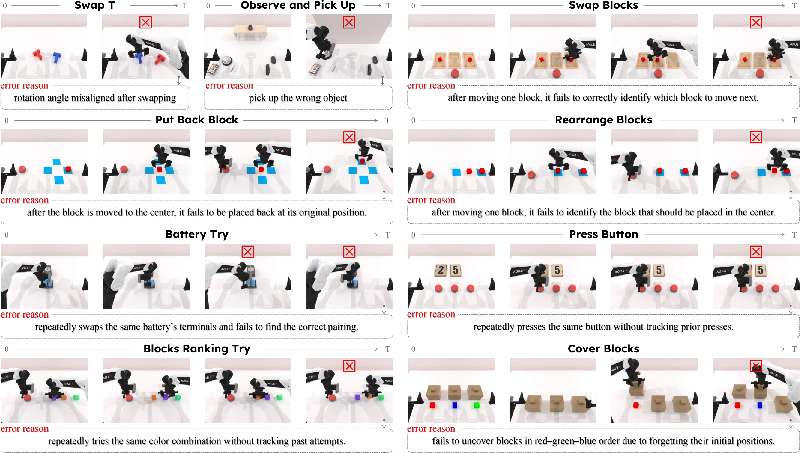
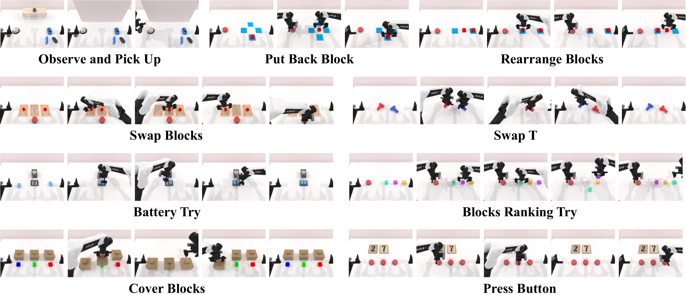
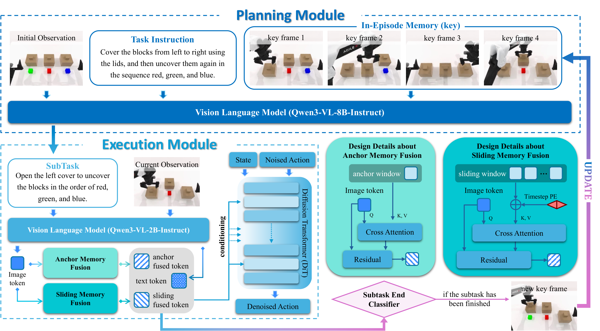

能拿到的是：一个可标注、可传递的任务侧记忆需求量（TMC，Task Memory Complexity）定义，九个按 M(1)/M(n) 分层的双臂任务，以及一份「哪块记忆在哪种任务上是必需品、在哪种任务上反而是噪声」的机制消融证据。代价是：只有九个任务、每任务 50 条示范、单任务训练，绝对成功率普遍很低（Mem-0 全任务均值 42.0%），其中两个任务目前对所有策略都不可区分（Press Button 全 0%，Observe and Pick Up 全部 \(\le9\%\)），因此它适合做归因实验，不适合做能力证明。
- 最小可复用件
- TMC 的三步标注流程（枚举「当前观测对应多个合法动作」的决策点 → 找出消歧所需的那几条历史观测 → 去冗余），加上九个任务的语义骨架；这两件事可以脱离 Mem-0 和 RoboTwin 单独搬进你自己的任务集。
- 主要风险
- 它没有提供反事实历史干预接口——你不能把某一段历史换掉再看动作是否改变，只能删架构通路（w/o Anchor 等）或换终止信号（GT Classifier oracle）。用它做「因果」结论时，机制归因的证据强度到此为止。
- 复现门槛
- 仿真侧只需 RoboTwin 2.0 + SAPIEN，每任务 50 条专家示范、100 次 rollout；Mem-0 本身是重资产：8×A800、全局 batch 448、30K 迭代、单任务约 18 小时，另加规划模块 Qwen3-VL-8B 的 LoRA 微调约 0.5 小时/任务。
1 核心摘要
问题出在评测方式上。已有的记忆型策略（MemoryVLA、MemER、CronusVLA、SAM2Act）各自报告自己有效，但「一个任务到底需要记住多少历史」这件事，从来是由某个具体架构的成功率间接反映出来的：换一个骨干、换一套示范数量，结论就变了。作者把这种状况称为「缺少以任务为中心（task-centric）的判据」——你能看到分数，看不到这个分数背后「必须记住哪一帧」。
论文的第一项贡献是把这件事变成可标注的量。Task Memory Complexity（TMC）定义为一个任务在最优策略下最少需要保留多少条过去观测：把任务写成 POMDP，允许策略从历史 \(h_t\) 里按任意规则挑 \(k\) 条观测组成记忆读 \(\mu _k(h_t)\)，则 TMC 是使「存在最优策略」成立的最小 \(k\)。关键约束是策略只能看当前观测、这 \(k\) 条记忆和目标 \(g\)，不许看隐状态、也不许看 oracle 阶段标签——这一条直接排除了「把长任务切成原语、再喂阶段标签」这种把任何任务都压成 M(0) 的退化做法。据此任务被标注为 M(0)（无需记忆）、M(1)（一条历史即可消歧）、M(n)（需要两条以上互不相邻的历史或事件记录）。
第二项贡献是基准本身：九个双臂任务，5 个 M(1) + 4 个 M(n)，建在 RoboTwin 2.0 / SAPIEN 上，并为每个「动作—观测对」配了细粒度语言标注，其中包含子任务级监督与终止标签。作者明确说明这份监督「是基准的属性而不是某个方法的属性」，对所有策略开放——但实际只有分层策略（Mem-0、MemER）用了它。
第三项贡献是一台为消融而造的机器：Mem-0，双系统结构，规划模块（Qwen3-VL-8B + LoRA）在「关键记忆窗」上算子任务推理，执行模块（Qwen3-VL-2B + DiT-B 流匹配动作头）在「锚点记忆 + 滑动记忆」上出动作，两者由一个子任务终止分类器（MLP）闭环连接。它的意义不在于性能，而在于四个部件可以逐个拔掉。
结果最有价值的部分是反直觉的那一半：在 M(1) 上去掉锚点记忆，均值从 52.8% 掉到 26.8%（Put Back Block 90%→35%，Swap Blocks 67%→15%）；可在 M(n) 上去掉锚点几乎不掉（28.5%→26.8%），Cover Blocks 反而从 68% 升到 92%。反过来，去掉关键记忆窗在 M(n) 上是灾难（28.5%→4.8%）。而把学出来的终止分类器换成仿真器真值，M(n) 均值从 28.5% 升到 45.3%——这个 16.8 点的缺口比 Mem-0 与最强基线的差距还大，于是作者给出全文最锋利的一句结论：瓶颈是子任务终止检测，不是记忆表征。
判定：如果你的目标是「证明我的记忆模块更强」，这个基准太小、太饱和、噪声太大，不适合；如果你的目标是「说清我的记忆模块为什么有效、在哪类任务上会变成噪声」，它提供了目前少见的、按记忆需求量分层的受控任务集，值得当作归因工具——但要自己补上它缺的那一环：反事实历史干预。
2 记忆环节定位
它占的是评测格，而且只部分触碰其余四格：它不提出记忆写入规则，但它用子任务标注定义了「什么时候该写一条记忆」（子任务结束）；它不做检索，但它用 TMC 标注规定了「哪几条历史必须可读」；它不改动作接口，只要求策略在 RoboTwin 的 16 维双臂动作空间里闭环执行。换句话说，它给出的是记忆机制的考卷与评分标准，不是答题方法。
| 环节 | 输入 | 输出 | 交给下游 | 在线性 / 因果性 |
|---|---|---|---|---|
| 评测（主） | 策略在九个任务上的闭环 rollout | 每任务成功率（100 次 rollout） | Table I 的横向对比与分层均值 | 闭环、因果：动作影响后续观测；但不提供反事实历史替换 |
| 记忆表征（部分） | 任务指令 \(g\) + 任务语义结构 | TMC 标签 M(0)/M(1)/M(n) | 任务分层与难度排序 | 任务级、非策略级：与具体架构无关，可迁移到别的机器人任务集 |
| 写入触发（部分） | 专家示范中的子任务边界 | 逐「动作—观测对」的语言标注 + 终止标签 \(y_t \in {0,1}\) | 分层策略的规划调用与记忆追加时机 | 离线标注；训练时可用真值边界，部署时必须靠分类器预测 |
| 索引检索（部分） | TMC 标注时枚举的决策点 | 「哪几条历史观测是消歧所必需」的清单（仅用于标注） | —（不进入运行时） | 标注期使用；运行时的检索策略由被测策略自己决定 |
| 动作接口 | — | 统一评测接口（XPolicyLab） | 16 维双臂动作、\(H=30\) 动作块 | 不涉及；接口由 RoboTwin 2.0 决定 |
记忆单位是什么。不是帧，也不是特征向量，而是任务语义事件：论文在解释 TMC 的实用估算时写得很清楚——选择规则 \(\tau _j\) 索引的是「初始观测到的构型」「上一次放置尝试」「一次失败的插入」「已完成的按键次数」这类语义事件，所以 \(n\) 数的是互不相同的语义记忆条数，不是原始帧数。这也是它能跨任务比较的原因：M(1) 说的是「一条语义记忆」，不是「一帧图像」。
写入频率是什么。由任务语义决定，而不是固定间隔。落到 Mem-0 上就是「每个子任务结束时写一条」：\(M_K = {(s_j, o_j^{\mathrm{end}})}\)，即文本子任务描述 + 该子任务的终端观测。M(1) 任务的整段 episode 只有一个子任务，所以只写一条（就是 episode 首帧，也就是 anchor）；M(n) 任务有几个子任务就写几条。基准层面不自带写入器，它自带的是边界标签。
读取条件是什么。基准只规定「哪些历史必须可读」，不规定怎么读。M(1) 的读取点通常是任务末端（要回到原 pad、要按原样复原）；M(n) 的读取点在每次需要「决定下一个子任务」的时刻，且读的是累积的尝试集合而非最近若干帧。这一点很重要：论文特意强调需要的信息「一般不在连续的近期窗口里，而在任意早期时刻的少数几条观测里」，所以任何「最近 K 帧」式的记忆在这个基准上结构性吃亏。
3 问题与动机
论文指出的失败模式很具体：现有策略普遍用定长近期观测窗，等于隐含假设决策过程近似马尔可夫。一旦任务不满足这个假设，失败就集中在「当前画面里已经没有那条信息」的时刻。Fig. 3 把这件事逐任务画了出来，可以作为动机的直接证据：Swap T 是交换完朝向对不上（初始朝向已被覆盖），Put Back Block 是「块被移到中间、按钮也按过之后，回不到原来的 pad」，Blocks Ranking Try 是「反复试同一个颜色组合，因为不追踪此前的尝试」，Press Button 是「反复按同一个按钮，因为不记账已按过的次数」。这些都不是控制精度问题，而是信息已不在画面里。

Figure 3：每行沿时间轴标出任务失败时刻，叉号下方列出对应的错误归因。
那么为什么已有的记忆基准不够用？论文给了四条具体理由，都指向「设计原则」而非「任务数量」：
| 基准 | 任务量 | 论文指出的问题 | 后果 |
|---|---|---|---|
| MemoryBench（SAM2Act） | 7 个单臂任务 | 只有 3 个能在仿真里稳定复现，且未给出任务设计的原理性指导 | 样本太小，无法支撑分层结论 |
| MIKASA | 32 个记忆相关任务 | 面向强化学习设定，不是通用模仿学习 | 与 VLA / 模仿学习路线不直接可比 |
| LIBERO-Long | 10 个长时程任务 | 任务相关信息全程可观测，并不真正需要记忆 | 「长」不等于「非马尔可夫」 |
| RoboCerebra | 长时程评测 | 同上：信息始终可见 | 测的是长程执行，不是记忆 |
| RoboTwin 2.0 标准任务集 | 大规模双臂任务 | 绝大多数短时程，属于 M(0) 区间 | 作为基座合适，作为记忆评测不合适 |
| RMBench | 9 个双臂任务 | 显式按 TMC 分层（M(1)/M(n)），并提供子任务级标注 | 可做「按记忆需求量分层」的对照 |
值得注意的是它的取舍：为了可控，它把任务数压到 9 个，把每个任务的示范数压到 50 条，把评测压到 100 次 rollout。这是一个明确的工程选择——牺牲规模换「同一批示范、同一套接口、同一批 rollout 数」的严格对照。代价在第 5 节会看到：两个任务已经饱和到对所有策略都不可区分。
4 方法拆解
这一节按「定义 → 标注 → 任务集 → 消融载体」四层拆。需要提前说明：RMBench 是基准，不是方法，所以下面 4.5 的 Mem-0 只作为「让消融可执行」的载体来读，不应该被当作本文的主要贡献。
4.1 TMC：把「要记多少」写成最小记忆容量
任务写成 POMDP：隐状态 \(s_t\)、动作 \(a_t\)、观测 \(o_t\)，奖励是任务目标 \(g\) 对应的稀疏成功指示，因此「最优」有明确定义；历史 \(h_t = (o_{1:t}, a_{1:t - 1})\)。容量为 \(k\) 的记忆读定义为一张映射：
\[\mu _k(h_t) = ( o_{ \tau 1(h_t)}, \ldots , o_{ \tau k(h_t)} ), \tau _j(h_t) \lt t\]
其中每条选择规则 \(\tau _j\) 可以任意依赖 \(h_t\)。也就是说，策略可以自由选择记哪 k 条，但不能选择记多少条；\(F_k\) 是所有这类映射的集合，\(F_0\) 只含空读。因为选择规则不受约束，「哪些观测重要」是下面这个最小化的结果，而不是它的输入：
\[\operatorname{TMC}=\min\{k\ge0:\exists\mu_k\in F_k,\ \exists\pi\text{ 使 }\pi(a_t\mid o_t,\mu_k(h_t),g)\text{ 最优}\}\]
于是任务满足 \(TMC = k\) 当且仅当「保留 k 条历史可达最优、保留 k−1 条不可达」。这个定义里最要紧的是条件变量清单：策略只看当前观测、记忆读、目标，既不能看隐状态 \(s_t\)，也不能看任何特权阶段标签。正因如此，任何一个长任务都不能靠「切成原语 + 喂 oracle phase label」被压成 M(0)——这个退化路径被定义本身排除了。等价的说法是：TMC 在「任务目标 \(g\) 被表述为单条指令的最粗层级」上标注。论文给的例子很干净：Put Back Block 的轨迹可以切成若干视觉引导的原语，但最终归位仍然依赖一条更早的观测，所以是 M(1)；Blocks Ranking Try 需要累积多次尝试的结果，所以是 M(n)。
4.2 从定义到标注：三步枚举 + 可传递性检验
TMC 在形式上是最小化，实操上不可能穷举所有策略。论文给了一个可执行的估算流程，共三步：① 枚举「当前观测对应多于一个合法动作」的决策点；② 对每个决策点，找出能消歧的那几条过去观测；③ 丢掉冗余项，剩下的独立条目数就是 TMC。因为观测在时间上连续，TMC 是任务级量而不是物理时间的离散化——这也是它能跨机器人、跨形态迁移的原因。
作者对这套标注做了两项检验，值得单独记下来，因为这是「基准能被别人扩展」的前提。其一是可迁移性：从 DROID 与 AgiBot World 里抽 50 个操控任务，按同一流程标注，全部落在 \({M(0), M(1), M(n)}\) 内，没有任务需要扩展标签空间或加特例。作者同时声明这只是「协议能终止并给出定义良好的标签」，样本不具代表性，因此不报告这两个数据集上的 TMC 分布。其二是标注稳定性：10 名未读过论文的独立参与者，仅凭第 3 节 A 的书面协议标注同一批任务，与设计者参考标签的一致率平均 96%（最高 100%、最低 80%），随机猜的三分类基线是 33%。
论文自己也把这三条局限写清楚了，本页照录以免误用：报告的是与参考标签的一致率，不是标注者之间的 chance-corrected 一致性（Fleiss' \(\kappa\) 需要保留逐任务标签矩阵，作者留作后续）；标签空间是事先给定且封闭的，测的是「在该空间内应用的一致性」，不是「该空间是否是正确的抽象」；只报了总体一致率，没有分标签拆解，而 M(1) 与 M(n) 的边界恰恰是最需要判断力的一处（它取决于任务能被切到多细的语义事件）。
4.3 九个任务：分层、描述与规模
任务集是 5 个 M(1) + 4 个 M(n)，全部为双臂操控，建在 RoboTwin 2.0 框架与 SAPIEN 引擎上，因此示范合成与策略评测在同一条流水线里。每个任务都配有与「动作—观测对」对齐的语言标注，提供子任务级监督。

Figure 1：九个任务以关键执行帧排列；上两行为单条记忆任务，下两行为多条记忆任务。
| 任务 | TMC | 任务描述（据附录 Table V 意译） | 关键执行步（据 Fig. 1） |
|---|---|---|---|
| Observe and Pick Up | M(1) | 先观察一个参照物，参照物被遮住后凭记忆从桌上拿起与之匹配的物体 | 观察初始场景 → 目标被遮挡 → 准备抓取 → 抓起目标 |
| Rearrange Blocks | M(1) | 把中间那块移到 pad 上、按一次按钮，再把另一块移回中间位置 | 移块 → 按按钮 → 移块归位 |
| Put Back Block | M(1) | 把一块移到中央、按按钮，然后把这块放回它原来的 pad | 移块到中央 → 按按钮 → 放回原 pad |
| Swap Blocks | M(1) | 借助一块空 pad 交换两块的位置，最后按下确认按钮 | 移块 → 按按钮 → 移块 → 移块 |
| Swap T | M(1) | 交换两块彩色 T 形块的位置与朝向 | 抓取 → 换位 → 对齐朝向 |
| Battery Try | M(n) | 反复尝试不同的电池插入顺序与朝向，直到两块电池都正确插入 | 切换左右 → 抓取 → 插入 → 失败后换一种插法 |
| Blocks Ranking Try | M(n) | 反复摆放彩色块并按下按钮，直到试出正确的排序 | 摆块 → 按按钮 → 再摆 → 再按 |
| Cover Blocks | M(n) | 从左到右把块盖住，再按红—绿—蓝的顺序揭开 | 盖块 → 盖块 → 按颜色顺序揭块 |
| Press Button | M(n) | 按画面给出的数字依次按两个按钮，最后按确认按钮 | 按 2 → 松开 → 按 5 → 松开 → 按确认 |
规模到底有多小。九个任务；每个任务50 条专家示范即可训练（真机侧是 100 条遥操示范）；每个任务评100 次 rollout（真机 40 次）。这组数字意味着两件事：一是复现成本低到可以一个人跑完九任务，二是统计噪声不小——100 次 rollout 在成功率 50% 附近的标准误约 5 个百分点，论文没有报告随机种子数或置信区间（未在已核验的公开材料中确认），所以个位数差异不应被当作结论。另外，每个任务的 episode 长度（最大步数）论文没有给出，也未在已核验的公开材料中确认；TMC 本身就是任务级量、与物理时长解耦，缺失它不影响机制结论，但影响你对「一次 rollout 要跑多久」的估算。
成功判据。奖励被定义为由任务目标 \(g\) 指定的稀疏成功指示，即 episode 结束时的二值判定，报告值是成功率。具体每个任务的判定条件（例如 Blocks Ranking Try 要求整条排序序列完全正确、Press Button 要求按序且次数正确）落在 RoboTwin 2.0 的 task checker 里，论文正文没有逐个给出判定阈值，此处不做推测。论文明确提到 Blocks Ranking Try 的成功判据「要求完整排序序列正确，一次执行错误即整条失败」，这是解释它绝对分数偏低的关键。
4.4 消融载体 Mem-0：四个可拔插的记忆部件
为了让「记忆部件」可以被逐个关掉，作者造了 Mem-0。它有两个模块，靠一个分类器闭环：
规划模块（Qwen3-VL-8B-Instruct，LoRA rank 8、lr 1e-4、25 epoch、bf16、约 0.5 小时/任务）在第 \(i\) 次调用时预测子任务 \(s_i = V_{\mathrm{plan}}(o_0, g, M_K^{i - 1})\)，其中 \(M_K^{i - 1} = {(s_j, o_j^{\mathrm{end}})}_{j=1}^{i - 1}\) 是关键记忆窗——已完成的每个子任务的文本描述加终端观测。因为只在子任务结束时调用，规划调用数是 \(O(N)\) 而非 \(O(T)\)。
执行模块（Qwen3-VL-2B + DiT-B，流匹配）在锚点记忆 \(M_A\)（1 个槽，固定为该子任务第一个控制步的图像隐向量）与滑动窗 \(M_S\)（最近 \(K=30\) 条隐向量）上做残差交叉注意力：\(\tilde{z}_t^l = \operatorname{CrossAttn}(z_t^{\mathrm{img}}, B_t^l) + z_t^{\mathrm{img}}\)，两个融合 token 与文本 token 拼成 \(c_t\)（维度 6144 = 3×2048）。动作头用 flow matching，\(H=30\)、\(\Delta =30\)（整块执行完再推理）、Euler 8 步，单卡 A800 上 5–10 Hz。
子任务终止分类器是 \(c_t\) 上的 MLP（6144→2048→512→1），阈值 0.5，累积 \(L_{\mathrm{sw}}=8\) 次正信号才宣布切换；训练时用真值终止帧（\(L_{\mathrm{mem}}=8\)），正类权重 10.0、focal 指数 1.0、损失权重 \(\lambda =0.2\)。因为与动作头共享 \(c_t\)，它不消费任何仿真器特权信息——这一点决定了「GT Classifier」只能作为 oracle 报告，不能算竞争者。
论文自己点出了两个不对称，这直接决定了消融怎么读：锚点读没有选择（\(|M_A|=1\)，注意力权重恒为 1，退化为一次学习到的投影加法），它带来的是「上下文持续存在」，不是「检索」；滑动读才是真正的时间选择。所以「去掉锚点」测的是「持久上下文有没有用」，不是「检索有没有用」。
5 证据与实验
协议：八个策略分三组——从零训的 DP、ACT；大规模预训练的 Pi0.5、X-VLA、QwenOFT；记忆型 MemER、MemoryVLA、Mem-0。QwenOFT 与 MemoryVLA 经 StarVLA 实现（MemoryVLA 用 OpenVLA 骨干），全部走 XPolicyLab 统一接口。MemER 原本是单臂，只把动作空间适配到 RoboTwin 2.0 的双臂设定，记忆机制不动。每方法同 50 条示范/任务、100 次 rollout。
5.1 主结果：分层差距不对称
| 任务 | TMC | DP | ACT | Pi0.5 | X-VLA | QwenOFT | MemER | MemoryVLA | Mem-0 |
|---|---|---|---|---|---|---|---|---|---|
| Observe and Pick Up | M(1) | 1% | 1% | 9% | 9% | 0% | 7% | 0% | 4% |
| Rearrange Blocks | M(1) | 0% | 29% | 13% | 13% | 0% | 17% | 22% | 89% |
| Put Back Block | M(1) | 0% | 0% | 11% | 18% | 0% | 0% | 50% | 90% |
| Swap Blocks | M(1) | 11% | 2% | 24% | 16% | 0% | 14% | 17% | 67% |
| Swap T | M(1) | 20% | 2% | 15% | 3% | 0% | 7% | 9% | 14% |
| M(1) 均值 | — | 6.4% | 6.8% | 14.4% | 11.8% | 0.0% | 9.0% | 19.6% | 52.8% |
| Battery Try | M(n) | 10% | 19% | 16% | 26% | 14% | 27% | 25% | 28% |
| Blocks Ranking Try | M(n) | 10% | 0% | 6% | 1% | 37% | 0% | 12% | 18% |
| Cover Blocks | M(n) | 0% | 0% | 0% | 2% | 0% | 6% | 40% | 68% |
| Press Button | M(n) | 0% | 0% | 0% | 0% | 0% | 0% | 0% | 0% |
| M(n) 均值 | — | 5.0% | 4.8% | 5.5% | 7.3% | 12.8% | 8.3% | 19.3% | 28.5% |
| 总均值（九任务不加权） | — | 5.8% | 5.9% | 10.4% | 9.8% | 5.7% | 8.7% | 19.4% | 42.0% |
相对最强基线 MemoryVLA，Mem-0 在 M(1) 上高 33.2 点、在 M(n) 上只高 9.2 点。作者对这个不对称的解释是本页认为最该记住的一句：M(1) 只需要「一条 episode 初始观测」，而锚点记忆恰好就是那条；M(n) 依赖「累积的事件历史 + 子任务级推理」，链路更长，出错点更多。换言之，基准的难度分层是有效的——它确实把「一条历史」和「多条历史」分成了两种不同的能力，而不是同一件事的两个难度档。
而且 Mem-0 并非逐任务全胜，这一点在引用这张表时最容易被忽略：Swap T 上最优是 DP（20%，Mem-0 为 14%），Blocks Ranking Try 上最优是 QwenOFT（37%，Mem-0 为 18%），Observe and Pick Up 上最优是 Pi0.5 与 X-VLA（各 9%，Mem-0 为 4%）。所以「Mem-0 最好」只在均值意义上成立，逐任务的胜负说明：这三个任务的主导因素分别是精度、单步决策与语义判别，而不是记忆。
同一张表还暴露了三个必须承认的坏消息。第一，Press Button 所有策略全为 0%，论文归因是单次按键的视觉变化太微弱，图像 token 分辨不出来——这是分类器上游的感知瓶颈，「再多的记忆也补不了」。第二，Observe and Pick Up 全部 \(\le9\%\)，且预训练策略略占优，说明这里的瓶颈是细粒度语义判别而非记忆。第三，Cover Blocks 上 Mem-0 的 68% 对最强基线 40%，但它同时也是唯一一个「去掉锚点反而更好」的任务（见 5.3）。三个事实合起来说明（本页分析）：九个任务里真正能稳定区分记忆能力的只有 6–7 个；Put Back Block（90%）与 Rearrange Blocks（89%）是九任务里最高的两档，其余任务仍在 70% 以下，说明分数分布既饱和又不均匀。
5.2 任务 × 记忆维度矩阵：不记忆会在哪一步断掉
论文的官方分层轴只有 TMC（M(1)/M(n)），粒度较粗。为了判断「这个基准是否覆盖了不同的记忆类型」，本页把九个任务按四个记忆维度重排（此矩阵为本页整理，不是论文原表，依据是附录 Table V 的任务描述与 Fig. 3 / Fig. 5 的失败归因）：
| 任务 | TMC | 隐藏参照物 | 历史位置 | 已试集合 / 失败次数 | 子任务进度 | 不记忆时断在哪一步（论文归因） |
|---|---|---|---|---|---|---|
| Observe and Pick Up | M(1) | ● | — | — | — | 抓错物体（pick up the wrong object） |
| Rearrange Blocks | M(1) | — | ● | — | ○ | 移走一块之后，认不出「该被放回中间的是哪一块」 |
| Put Back Block | M(1) | — | ● | — | ○ | 块被移到中央、按钮也按过之后，回不到原来的 pad |
| Swap Blocks | M(1) | — | ● | — | ○ | 移走一块之后，认不出「下一个该动哪一块」 |
| Swap T | M(1) | — | ●（位置+朝向） | — | — | 交换完成后旋转角对不上（初始朝向已被覆盖） |
| Battery Try | M(n) | — | — | ● | ○ | 反复用同一种极性/朝向去插，找不到正确配对 |
| Blocks Ranking Try | M(n) | — | ○ | ● | ● | 反复试同一颜色组合，不追踪此前尝试 |
| Cover Blocks | M(n) | ● | ○ | — | ● | 忘了各色块的初始位置，揭盖时给不出红—绿—蓝顺序 |
| Press Button | M(n) | — | — | ● | ● | 反复按同一个按钮，不记账已按过的次数 |
读这张表有三点值得注意。第一，M(1) 与 M(n) 的划分确实对应了不同的记忆维度：M(1) 集中在「历史位置 / 隐藏参照物」——一次性的、静态的、可被单帧承载的信息；M(n) 集中在「已试集合 / 子任务进度」——累积的、计数的、无法被任何单帧承载的信息。这个对应关系比 TMC 的两级标签本身更有信息量，也解释了为什么锚点记忆在 M(1) 上决定性、在 M(n) 上失效：锚点只能装一条，装不下计数。第二，四个维度里有三个在 M(n) 上出现，但「已试集合」这一类只有一个真正的强实例（Blocks Ranking Try）和一个饱和实例（Press Button 全 0%），覆盖面偏窄；如果要在自己的任务集上复用这套分层，这一类需要补任务。第三，最后一列是论文对基线失败的归因，不是对任务最小需求的证明——它是「这个任务在真实策略上确实会因缺历史而失败」的经验证据，而不是 TMC 标注的形式化验证。两者不能互换。
5.3 消融：同一块记忆在不同层上是资产也可能是负债
| 配置 | M(1) 均值 | M(n) 均值 | 论文给出的解释 |
|---|---|---|---|
| Mem-0（完整） | 52.8% | 28.5% | — |
| w/o Anchor（去掉锚点槽） | 26.8% | 26.8% | M(1) 上锚点就是那条初始观测，去掉即失去唯一载体；M(n) 上所需记忆由关键窗承担，锚点变成重复信息，Cover Blocks 反而 68%→92% |
| w/o Sliding（去掉滑动窗） | 40.4% | 25.3% | M(1) 掉 12.4 点；但 Swap T 反而 14%→20%、Cover Blocks 68%→84%，说明短窗在部分任务上与锚点/关键窗互相干扰 |
| w/o Key（去掉关键记忆窗） | —（M(1) 不用子任务分解） | 4.8% | M(n) 上唯一「去掉后每个有进展的任务都变差」的部件；Blocks Ranking Try 18%→1%、Cover Blocks 68%→5% |
| GT Classifier（oracle，不参与排名） | — | 45.3% | 只替换终止信号、不动记忆表征；M(n) 提高 16.8 点，是所有单项改动里最大的一项 |
四组结论，按可迁移性排序：
① 记忆部件的边际价值取决于「同一信息是否已在层级更上方可得」。锚点在 M(1) 上是唯一载体，价值 26 点；在 M(n) 上关键窗已经承载了同样的历史，锚点就变成重复，价值 −1.7 点，个别任务上甚至有害（Cover Blocks 68%→92%）。这是全文最反直觉、也最可迁移的一条：加记忆通路不是单调改进。
② 层级化的记忆里，真正不可替代的是「跨子任务的累积窗」。去掉关键窗，M(n) 从 28.5% 塌到 4.8%——因为规划模块失去「已完成哪些子任务、它们的视觉结果是什么」之后，只能从 \(o_0\) 猜下一个子任务，而这在计数类任务上原理上不可能。
③ 瓶颈在终止检测，不在记忆表征。换成真值终止信号，记忆表征一点没变，M(n) 却从 28.5% 涨到 45.3%；Blocks Ranking Try 18%→45%、Press Button 0%→14%。这个缺口（16.8 点）大于 Mem-0 与最强基线的差距（9.2 点）。作者据此把「稳健的子任务终止检测」列为比「更丰富的记忆表征」更优先的方向。
④ 记忆无法补偿感知。Press Button 全 0 的原因被定位到「按下/未按下」在视觉 token 里几乎不可分，作者的建议是引入本体或触觉反馈——这条把问题移出了记忆机制的范畴。
这些结论的适用边界必须说清。它们是在单一架构（Mem-0）、单任务独立训练、每任务 50 条示范、四个 M(n) 任务的条件下得到的。四条边界：① 「锚点有害」只在「上方已有等价记忆」时成立，而 Mem-0 的关键窗恰好是按子任务组织的，换成一个不做子任务分解的策略，这个结论可能完全反转；② 「终止检测是瓶颈」有一部分是这个分类器的瓶颈（MLP on \(c_t\)、8 帧累积），不能直接外推成「所有分层策略的瓶颈」；③ M(n) 只有四个任务、且其中一个饱和，任何「M(n) 上 X 有效」的结论实际上只由三个任务支撑；④ 所有增益都混着一份额外监督（子任务标注 + 终止标签），论文自己在 5.1 节明说了这一点。
不能横向比较的地方。① Mem-0 与 MemER 消费了基准提供的子任务标注与终止标签，其余策略端到端训练——所以「Mem-0 比 Pi0.5 高多少」里既有架构差也有监督差；② MemER 是从单臂改到双臂的，动作空间适配可能压低它的上限，它的 8.7% 不该读作「记忆检索方法不行」；③ 每个策略只训一个 seed、只报点估计，100 次 rollout 下 5 点以内的差异不构成证据；④ 真机（3 任务、100 条遥操示范、40 次试验）上 Mem-0 均值 22.5% 对 Pi0.5 的 5.8%，DP/ACT 全 0——作者自己把这组数读作「机制能迁移到硬件」而非「可部署可靠性」，且真机没有纳入任何记忆型基线（MemER 与 MemoryVLA 在其平台上都跑不起来）。

Figure 2：上部规划模块从关键记忆窗生成子任务；下部执行模块融合锚点与滑动窗口，终止分类器控制子任务切换。
6 优点、局限与 VLA 适配
可迁移
① TMC 三步标注法与主干无关，可以直接用来给你的任务集打标签，先判断「这批任务到底需不需要记忆」，再决定投不投记忆模块；② 按记忆需求量分层报告的做法（M(1)/M(n) 分别报均值）比总体均值有信息量得多，建议直接抄进你的实验表；③ 「同一信息在层级里出现两次就是噪声」这个判据可以当作设计检查项：加任何记忆通路前，先问「这条信息在上游是否已经可得」；④ w/o 组件 + oracle 终止信号这对组合，是把「表征不够」与「时序不对」分开的标准手法，成本很低。
不成立的前提
① 它假设任务可以被切成离散子任务并给出边界标注——真机数据上这通常要人工标，成本高且边界本身有歧义（论文自己的 96% 一致率里，最分歧的正是 M(1)/M(n) 边界）；② 它假设成功判据是明确的二值，对「部分完成」不给分，因此 Blocks Ranking Try 这类任务的绝对分数被压得极低，任务间的分数不可直接比较；③ 它假设视觉足以区分关键状态——Press Button 直接证伪了这一点；④ 它假设单任务独立训练，没有跨任务迁移，也未验证多任务联合训练下结论是否成立。
延迟与算力。Mem-0 报告单卡 A800 上 5–10 Hz 控制，靠的是「\(H=30\) 动作块整块执行完再推理」+「规划只在子任务边界调用（\(O(N)\) 而非 \(O(T)\)）」+ Euler 8 步。这三个数字要一起看：如果把 \(\Delta\) 调小做更频繁重规划，控制频率会掉；如果把分类器阈值调低以求更快切换，误切换会增加——论文的 \(L_{\mathrm{sw}}=8\) 帧累积正是为了压住单帧误报，代价是切换延迟至少 8 帧。论文没有报告显存占用与端到端延迟分解（未在已核验的公开材料中确认）。
真机闭环风险。三点。其一，真机只覆盖 M(1) 与 M(n) 里「容易在硬件上搭出来」的三种（Put Back Block、Rearrange Blocks、Cover Blocks），计数类任务（Press Button、Battery Try）没有上真机——也就是说最需要记忆的那一类在硬件上没有验证。其二，真机 22.5% 的绝对值下，作者把主要失败归因于「块操作不够精确」而非高层规划，这与仿真里「记忆不是低层精度的瓶颈」一致，但也意味着这套系统离可用还有很大距离。其三，终止分类器在真机上没有任何兜底：一旦它误判，记忆窗会写入错误的关键帧，后续规划全部建立在错误历史上，而系统没有回滚或校验机制。
最小改造方案。如果你的目标只是「用这套基准验证我的记忆模块」，不必复现 Mem-0：直接用 RoboTwin 2.0 起九个任务、每任务 50 条示范，把你的策略接到 XPolicyLab 接口上，按 M(1)/M(n) 分别报均值，并额外跑一次 5.2 的维度矩阵——按「隐藏参照物 / 历史位置 / 已试集合 / 子任务进度」四列分组看你的增益落在哪一列。如果增益只出现在「历史位置」列，说明你做的是单帧锚点，和已有工作同质；如果出现在「已试集合」列，才是真正的长程累积能力。
6.1 用 RMBench 做机制消融：一份可执行的实验设计
这是本页认为 RMBench 最该被用的方式，也是它相对「刷分」的真正价值。核心原则：一次只动一个记忆自由度，其余全部钉死。
（一）消融什么——四个正交的记忆自由度。不要只做「有/无记忆模块」，那是最弱的一种消融。按下面四轴各做一组：
| 轴 | 具体条件 | 它回答的问题 | 预期（据本文证据） |
|---|---|---|---|
| A. 记忆容量 | \(K \in {0, 1, 4, 30, \text{全历史}}\)（滑动窗长度）；锚点槽 \({0, 1}\) | 该任务的收益在第几条历史上饱和？是否与 TMC 一致？ | M(1) 应在 \(K\) 很小、锚点=1 时饱和；M(n) 应随累积长度继续涨 |
| B. 记忆内容类型 | 同一容量下，缓冲区里放什么：原始帧隐向量 / 子任务文本 / 「已执行动作的计数」/ 成功-失败标记 | M(n) 的收益来自「看得见的历史」还是「可计数的历史」？ | 计数类任务应只在含计数/标记的条件上有效，纯帧记忆无效 |
| C. 写入触发 | 固定间隔 / 学出来的分类器 / 真值边界（oracle）/ 随机时刻 | 「何时写」比「写什么」重要多少？ | 真值 vs 学习的差距应显著（本文 16.8 点），随机时刻应接近最差 |
| D. 读取接口 | 无条件全读 / 按相似度 top-k / 按时间衰减加权 / 只读最近一条 | M(n) 上「累积」是否必须全读？ | 若 top-k 与全读持平，说明该任务不需要全量累积，TMC 标注可能偏高 |
（二）控制什么。① 同一批 50 条示范、同一套 rollout 初始状态（固定 seed 集，至少 3 个 seed × 100 次 rollout，报告均值与标准误）；② 同一 VLM 骨干与同一动作头，只改记忆通路，参数量差异要报告；③ 监督对齐：如果要与端到端基线比，必须额外跑一组「给基线同样的子任务标注但不给记忆」的对照，否则增益无法归因（这正是本文 Table I 的缺口）；④ 训练预算对齐（迭代数或 wall-clock 取其一，另一个作为混杂因素报告）；⑤ 只在 M(1)/M(n) 内部比较，不要跨层平均。
（三）报告什么。① 分层的成功率均值 + 逐任务表 + 标准误；② 按 5.2 的四维矩阵分组的增益表（这是把「分数」变成「机制结论」的关键一步）；③ 终止检测的单独指标：切换时刻相对真值边界的偏移分布、漏检/误检率、以及在 oracle 终止信号下的上限；④ 成本：每步读入的记忆条目数、显存、端到端延迟、控制频率；⑤ 失败归因：至少在 20 条失败 rollout 上人工标注「是记忆缺失、感知不足、还是时序错位」——本文 Fig. 3 的做法值得照抄，因为它是唯一能把「掉点」翻译成「机制」的证据形式。
（四）它做不到的那件事。上述设计仍然回答不了「如果历史内容变了，动作会不会变」。真正的反事实干预需要在同一状态下喂入两条不同的历史（例如「按了 3 次」vs「按了 5 次」），比较动作分布差异——这需要仿真器支持状态注入或历史重放，RMBench 论文未提供该接口（未在已核验的公开材料中确认其代码库是否支持）。若要补这一环，最小实现是：在仿真里把 episode reset 到同一初始状态、用脚本执行不同长度的历史前缀、再让策略接管，比较首步动作的 KL 散度。这一步做出来，才是「记忆被真正读取」的因果证据。
7 落地清单
- 先给你的任务集打 TMC 标签，再决定要不要做记忆。按 4.2 三步走：枚举「当前观测对应多个合法动作」的决策点 → 找消歧所需的历史观测 → 去冗余。如果超过 80% 的任务落在 M(0)，说明你的基准测不出记忆，先换任务，别换模型。验收：找 3 个没读过你文档的人仅凭书面协议复标，与你的标签一致率应 \(\ge90\%\)（本文的参照值是 96%，随机基线 33%）。
- 起环境只做一件事：确认九个任务的 rollout 能跑通并复现量级。RoboTwin 2.0 + SAPIEN，每任务 50 条示范、100 次 rollout，先跑 DP 或 ACT 拿到 \(5\% - 6\%\) 量级的基线。若你的 ACT 在 Observe and Pick Up 上远高于 1%–9%，先检查相机配置与示范质量，不要急着上记忆模块。
- 消融按四轴做，一次只动一个。容量 \(K \in {0,1,4,30}\)、内容类型、写入触发（固定/学习/真值/随机）、读取接口（全读/top-k/衰减）。每组至少 3 个 seed，报告标准误；100 次 rollout 下不要解释 5 点以内的差异。
- 必须跑 oracle 终止信号这一组。把分类器换成仿真器真值边界，看 M(n) 涨多少。如果涨幅 > 你的记忆模块带来的涨幅（本文是 16.8 vs 9.2 点），说明你的瓶颈在时序而不在表征，应优先修终止检测而不是加记忆容量。
- 按记忆维度分组报告，而不是按总分。把任务按「隐藏参照物 / 历史位置 / 已试集合 / 子任务进度」四列切开，增益落在哪一列就说明你做了什么。只在「历史位置」列有效 = 你实现了一个锚点；只有在「已试集合」列有效，才算真正做成了累积记忆。
- 上线前做三件事的监控：每次切换时刻与真值边界的偏移、记忆窗里实际条目数（对照延迟）、以及失败 rollout 的归因分布（记忆缺失 / 感知不足 / 时序错位）。第三项决定你下一步该投哪。真机侧注意：本文的三个真机任务全是 M(1) 与「易搭」的 M(n)，计数类任务没有硬件验证，别直接外推。
来源：Tianxing Chen, Yuran Wang, Mingleyang Li, Yan Qin, Hao Shi, Zixuan Li, Yifan Hu, Yingsheng Zhang, Kaixuan Wang, Yue Chen, Hongcheng Wang, Junjie Wang, Tianhang Yang, Renjing Xu, Ruihai Wu, Yao Mu, Yaodong Yang, Hao Dong, Ping Luo, "RMBench: Memory-Dependent Robotic Manipulation Benchmark with Insights into Policy Design", arXiv:2603.01229v4, 2026-10-15（初版编号对应 2026-03）。数字取自 Table I（主结果）、Table II（M(1) 消融）、Table III（M(n) 消融）、Table IV（真机）、Table VI（标注一致性）、Table V（任务描述）、Table VII–VIII（超参），以及第 III 节（TMC 定义）、第 V-B 节（消融分析）、附录 II（标注稳定性）。项目页 https://rmbench.github.io/，代码 https://github.com/robotwin-Platform/rmbench。
相关页面：EvoMem-VLA（以差分 token 为记忆单位，在本基准上评测） · 专题三 · 在线记忆 · 返回首页